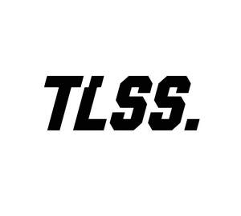

Trade Mark Journal No.2025/037 12 September 2025
UK00004224268 25 June 2025 (18,25,28,35)

- Class 18
- All purpose sport bags; Backpacks; Backpacks [rucksacks]; Canes; Handbags; Leather for shoes; Leather straps; Luggage trunks; Roller bags; School bags; Sports bags; Travel cases; Traveling bags; Trunks and suitcases; Umbrellas; Wallets.
- Class 25
- Articles of clothing; Briefs; Caps; Clothes for sports; Football boots; Football jerseys; Gloves; Headbands; Insoles; Knee warmers [clothing]; Shoe straps; Slippers; Sneakers; Snoods [scarves]; Socks; Sports pants; Stockings; Studs for football boots; Tights; Unitards.
- Class 28
- Balls for sports; Checkers games; Elbow guards [sports articles]; Face guards for sports use; Fitness exercise machines; Football equipment; Football gloves; Footballs; Futsal balls; Gloves for sports; Knee pads for athletic use; Nets for ball games; Protective cups for sports; Shin guards for soccer; Shin pads; Soccer ball bags; Sports training apparatus; Toys.
- Class 35
- Advertising, including promotion of products and services of third parties through sponsoring arrangements and licence agreements relating to international sports' events; Market campaigns; Marketing, advertising and promotion services; Online advertising on computer networks; Outdoor advertising; Product marketing; Production of sound recordings for marketing purposes; Production of video recordings for marketing purposes; Promotion, advertising and marketing of on-line websites; Promotion of goods and services through sponsorship of international sports events; Promotional marketing; Provision of an online marketplace for buyers and sellers of goods and services; Provision of business and commercial contact information via the Internet; Provision of commercial and business contact information; Provision of information and advisory services relating to e-commerce; Search engine optimization for sales promotion; Shop window display arrangement services; Website traffic optimization; Window dressing services for advertising purposes.
Sichuan Zhirezhe Sports Goods Co., Ltd.
Representative: IPSpeedy Limited